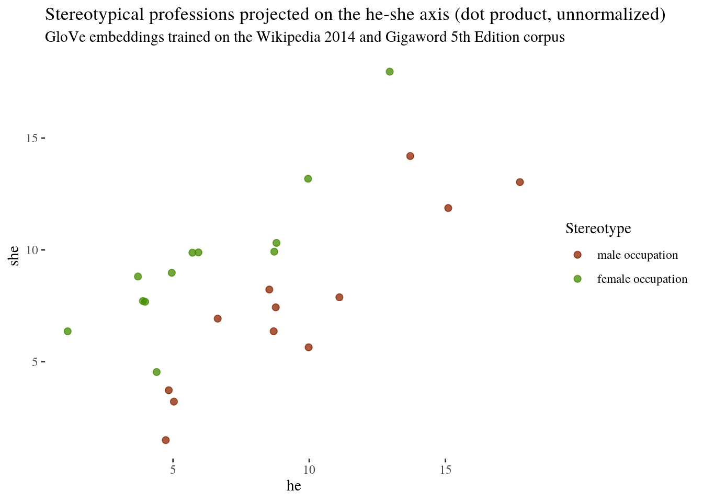

2 Cosine similarity and bias detection
2.1 Word embeddings
To understand what cosine similarity measurement is, one first needs to grasp the concept of translating words to a computer-readable form. In the field of natural language processsing there are two main types of words representation — localist and distributed. One-hot encoding is an example of a method used to achieve a localist representation of words. Here, each vector contains information only about a single data point. This is achieved by first mapping categorical values (words) to integers and then to each integers a binary vector is assigned which contains only 0s except for the index of the integer, which is assigned 1. An example of a localist representation is:
| word | 1 | 2 | 3 | 4 | 5 |
|---|---|---|---|---|---|
| woman | 1 | 0 | 0 | 0 | 0 |
| man | 0 | 1 | 0 | 0 | 0 |
| girl | 0 | 0 | 1 | 0 | 0 |
| boy | 0 | 0 | 0 | 1 | 0 |
| monarch | 0 | 0 | 0 | 0 | 1 |
In the example above it is clear that the length of the vectors increases with the number of words in a vocabulary. It is not a very computationally efficient representation. It has other flaws as well. For example, it is unable to capture the resemblance between words appearing in similar contexts.
In contrast to the localist representation, a distributed representation returns vectors that contain continuous values instead of discrete 1s and 0s. Word embeddings are a class of various techniques that allow one to represent words as distributed vectors. Such learned representations of text have certain properties. At least prima facie, they store similar (or at least co-occurring) words close to each other in a vector space. An example of distributed representation is:
| word | 1 | 2 | 3 | 4 |
|---|---|---|---|---|
| woman | 0.456 | 0.267 | 0.675 | 0.131 |
| man | 0.451 | 0.897 | 0.472 | 0.088 |
| girl | 0.604 | 0.262 | 0.414 | 0.706 |
| boy | 0.279 | 0.172 | 0.475 | 0.010 |
| monarch | 0.565 | 0.678 | 0.463 | 0.975 |
One of the advantages of using a distributed representation is that one is able to represent an enormous number of concepts with a smaller number of units. It is also possible to better capture similarities as words of similar meanings can have similar numeric vectors.
The numbers occurring in such representations are not random. They are learned in a process that uses a very shallow neural network. There are various types of techniques used for learning the vectors representations. One of the most straightforward ones is a skip-gram model. Given a word, the model tries to predict its neighboring words from the sentence. The mathematics behind the process relies on the idea that the prediction concerns the conditional probability of the adjacent words. The algorithm tries to minimize the loss function, which penalizes the system for discrepancy with actual co-occurrence frequencies in the corpus. One can choose various parameters of the model, such as the window size that determines how many surrounding words the model should predict. After preparing such a fitted model, one takes only the learned weights from a neural network, and uses them as vectors in a word embeddings representation.
Word embeddings have many applications in natural language processing. They are handy in document search and information retrieval. They also play their part in improving automatic translations. Well learned word representations may also contribute to the improvement of sentiment analysis or spam detection.
2.2 Cosine similarity and distance
Cosine similarity is often used as a method of finding out whether vector representations for two words suggest that they are similar or somehow connected. Cosine similarity is the cosine of the angle between two vectors: the result of dividing their inner product (dot product usually) by the product of their magnitudes.
It is worth mentioning one more point concerning cosine similarity. After the vectors are normalized to have length equal to 1, the inner product itself (often dot product) is used to measure the similarity, because it then equals the cosine similarity.
\[\begin{align} \tag{Sim} \mathsf{cosineSimilarity}(A,B) & = \frac{A \cdot B}{\vert \vert A \vert \vert \,\vert \vert B \vert \vert} \end{align}\] Cosine similarity is considered a proper tool for this operation as its result has a clear connection to geometry and at least for a low number of dimensions may be easily interpreted. Using this scale, one can compare vector similarities in a fairly clear manner. When the vectors are aligned perpendicularly to each other, their similarity equals 0 (which is the same as the cosine of 90 degrees). This tells us that the similarity between the vectors is small. As the angle between vectors decreases, cosine similarity approaches one, which stands for the greatest similarity. It is also possible to obtain negative cosine similarity. If the value approaches -1, this intuitively means that the words are contrary to each other.
One of the limitations of this measure is that it informs us only about similarities between vectors in terms of their orientation. However, it is often argued that in comparing words in terms of this metric, the magnitude of vectors may be treated as irrelevant, as the most important information pertains to direction.
In what follows, it is important to distinguish between cosine similarity and cosine distance, defined as: \[\begin{align} \tag{Sim} \mathsf{cosineDistance}(A,B) & = 1 - \mathsf{cosineSimilarity}(A,B)\\ & = 1 - \frac{A \cdot B}{\vert \vert A \vert \vert \,\vert \vert B \vert \vert} \nonumber \end{align}\]
The greater the similarity between two vectors, the smaller the distance between them. The cosine distance ranges between 0 and 2. If the vectors are in an opposite directions, the cosine distance is 2. And if the vectors are extremely similar then the cosine distance is very close to 0.
One should note that cosine distance is not exactly a distance measure, as it does not meet triangle inequality requirements. The triangle inequality formula says that for any triangle, the sum of the lengths of any two sides must be greater than or equal to the length of the remaining side. As shown in discussion in stats.stackexchange.com2 in the case of cosine distance it would have to fulfill this equation \(1+\mathsf{cos-sim}(A,C) < \mathsf{cos-sim}(A,B) + \mathsf{cos-sim}(B,C)\). If one chooses specific unit vectors it is easy to demonstrate that the triangle inequality is not preserved.
2.3 Cosine distance in a one-class bias detection
Bolukbasi, Chang, Zou, Saligrama, & Kalai (2016) define similarity between words as the outcome inner product of their normalized vectors. They focus on examining what the geometry of a word embedding is in regard to “he” and “she” words. In other words, whether the similarity between those concepts and other words reflects expected gender stereotypes. They test this hypothesis by investigating whether there is a connection between word embeddings representing certain professions and words referring to gender. They also evaluate whether automatically produced analogies between words reflect the stereotypes as well.
Here the gender bias of a word \(w\) is understood as its projection on the gender direction \(\vec{w} \cdot (\overrightarrow{he} - \overrightarrow{she})\) (the gender direction is the top principal compontent of ten gender pair difference vectors). The underlying idea is that no bias is present if non-explicitly gender words are in equal distance to both elements in all explicitly gender pairs. Given the (ideally) gender neutral words \(N\) and the gender direction \(g\) the direct direct gender bias is defined as the average distance of the words in \(N\) from \(g\) (\(c\) is a parameter determining how strict we want to be): \[\begin{align} \mathsf{directBias_c(N,g)} & = \frac{\sum_{w\in N}\vert \mathsf{cos}(\vec{w},g)\vert^c}{\vert N \vert } \end{align}\]
A very vivid way to follow their method of arguing that bias in word embeddings is real is to plot the values of inner product of chosen words. The plot below does not originate from the original paper but from kaggle.com R notebook using data from GloVe: Global Vectors for Word Representation.3 However, similar visualization may be found there. Data used to create our plot is as follows.
Occupations associated with feminine:
Occupations associated with masculine:

The points in the plot above result from the calculation of the inner product of a chosen vector for a profession word and a vector for a gender word (she or he). Inner product of two vectors expresses similarity between words. This assumption originates from the geometry and properties of a vector space. In the picture one may observe a correlation between the occupation and gender. Stereotypical male professions are closer to the “he” word and stereotypical female professions have greater similarity with “she” word. One could argue that this is a hint that there is some hidden bias information stored in the words vectors.
2.4 Cosine distance in a multi-class bias detection
Manzini, Lim, Tsvetkov, & Black (2019) present a different approach towards finding similarities between classes of words. Cosine distance is used in the article as a measure to first argue for the existence of multi-class bias and then to show how through bias mitigation techniques the bias may be decreased.
They modify WEAT to a multi-class setting, introducing Mean Average Cosine similarity as a measure of bias (in fact, in the paper they report distances rather than similarities). Let \(T = \{t_1, \dots, t_k\}\) be a class of protected word embeddings, and let each \(A_j\in A\) be a set of attributes stereotypically associated with a protected word). Then: \[\begin{align} S(t_i, A_j) & = \frac{1}{\vert A_j\vert}\sum_{a\in A_j}\mathsf{cos}(t,a) \\ MAC(T,A) & = \frac{1}{\vert T \vert \,\vert A\vert}\sum_{t_i \in T }\sum_{A_j \in A} S(t_i,A_j) \end{align}\]
As the code has been provided by the authors we were able to reconstruct their results. The main steps in the procedure are as follows. Let us go through an example that refers to the process of hard debiasing on religious attributes.
First we load word embeddings from reddit.US.txt.tok.clean.cleanedforw2v.w2v dataset. The word embeddings have only 50 dimensions and the number of individual words from the dataset is 44895. The authors assume that the protected group should ideally not have high cosine similarity to stereotypical words. The word embeddings geometry should not place this group close to harmful stereotypes, if it is to be bias-free. For instance, let’s look at the religion-related words.
Protected words by religion type:
Stereotypical words by religion type:
We have prepared a table presenting the values of cosine distance for each protected word with each attribute (stereotype). The part of the results is shown in Table 2.3
religion <- read.csv("../datasets/religionReddit.csv")[-1]
colnames(religion) <- c("protectedWord","wordToCompare","wordClass",
"cosineDistance","cosineSimilarity","connection")
religion$wordClass <- as.factor(religion$wordClass)
levels(religion$wordClass) <- c("christian","human","jewish","muslim","neutral")
head(religion) %>% kable(format = "latex",booktabs=T,
linesep = "", escape = FALSE,
caption = "Head of the religion dataset.") %>%
kable_styling(latex_options=c("scale_down"))In the article there was no analysis of individual distances, but the general look at the means. The authors introduced a metric that tries to generalize WEAT in measuring the presence of bias through the classification of multi-class bias in groups of words connected with gender, religion or race. In the process they first take the mean of cosine distances between a given protected word and attributes assigned to each stereotype. They do not differentiate between stereotypes associated with a word and stereotypes associated with different words (in the case of religion, stereotypes characteristic for Christianity has also cosine distance measured with for instance, Judaism or Islam). Then, after collecting the list of mean cosine distances, they average the list to obtain one final value representing the whole group, in this example religion, for which the final mean of all mean distances is equal to 0.859.
In the article the authors also try to remove biases, as previously defined, from a word embedding. First they identify the bias subspace using Principal Component Analysis (PCA) which is a technique for dimensionality reduction. It is applied here to choose the subspace that contains the greatest amount of information. There can be many subspaces found in a given group. For example in terms of religion one can identify at least a few sets that are to grasp the concept of religion in general:
The idea is to find a set that provides enough information to create from it a vector representing the concept of religion among words. This strategy is based on the idea that different dimensions of vectors contain different types of information and in some words in vector layers (subspaces) the information about religiousness is implicitly conveyed. In some cases this knowledge is useful, but in the case of harmful stereotypes one does not want to include the concept of religion in stereotypical words.
After finding the bias subspace, they use it to modify the vector values individually so that their cosine distances towards certain words are changed. In the case of stereotypes the aim is to make the cosine distances larger so that the association between protected word and stereotype is smaller.
In the final step they evaluate the results. The cosine distances are calculated again but this time using the debiased vocabulary. After taking the mean of all distances one final value is obtained and then it is compared with the average value from the beginning. If the cosine distances are on average greater than before then it leads the authors to the conclusion that improvement has been achieved. As the cosine distance increases, it is assumed that the association between protected and stereotypical words decreases.
2.5 Limitations of the approach
The attributes are taken from different sources, there is no principled justification for their choice. From our analysis it will become clear that the list is rather uneven.
There is no mention of methodology for deciding on the number of attributes necessary to decide a hypothesis on the given size of dataset. There are however some ways to estimate sample sizes needed to ensure that the results are meaningful if the effect is present. Our research will show that the numbers used are rather insufficient.
The authors use the mean of mean average cosine similarities to measure multi-class similarity between protected word and harmful stereotypes. They average the results until they obtain one final value to represent the mean cosine distance between protected word from a given class and the attributes of that class. If one takes closer look at the individual values that are taken for the calculations it turns out that there is a bunch of outliers and surprisingly dissimilar words. We approach this issue by providing the tables and visualizations of individual cosine distances to make sure that we obtain a proper insight into the data.
With such a method the uncertainty involved is not really considered which makes it even more difficult to give reasonable interpretations of the results. We propose the use of Bayesian method to obtain some understanding of the influence the uncertainty has on the interpretation of final results.
In the original paper, words from all three religions were compared against all of the stereotypes, which means that there was no distinction between cases in which the stereotype is associated with a given religion, as opposed to the situation in which it is associated with another one. Not all of the stereotypical words have to be considered as harmful for all of the religions. One should investigate the religions separately as some of them may have stronger harmful associations that others. One should also include control groups to have a way of comparing the stereotypical results with neutral or human-like words. Later in the text we will explain in details reasons for introducing control groups. In our analysis, we distinguish between stereotypes associated with a given group, stereotypes associated with different groups, and control groups: neutral words and stereotypes-free human predicates.
Assuming for a moment that the value of multi-class cosine distance is correct, one may question the interpretation. Manzini, Lim, Tsvetkov, & Black (2019) summarize the averages of cosine distance per group (gender, race, religion). For now let us focus now on analyzing the values relating to religious biases. Here is the relevant fragment of table:
| Religion Debiasing | MAC |
|---|---|
| Biased | 0.859 |
| Hard Debiased | 0.934 |
| Soft Debiased (\(\lambda\) = 0.2) | 0.894 |
MAC stand for mean average cosine similarity, although in reality the the table contains mean distances. What may attract attention is the fact that the value of cosine distance in “Biased” category is already quite high even before debiasing. High cosine distance indicates low cosine similarity between values. One could think that average cosine similarity equal to approximately 0.141 is not significant enough to consider it as bias. However the authors aim to mitigate “biases” in vectors with such great distance to make it even larger. Methodologically the question is, on what basis is this small similarity still considered as a proof of the presence of bias, and whether these small changes are meaningful. This is in general the problem of scale and the lack of universal intervals. In contrast, statistical intervals will help us decide whether a given cosine similarity is high enough to consider the words to be more similar than if we chose them at random. We will use highest posterior density intervals, in line with Bayesian methodology.
In our case, the curse of dimensionality may take place when there is an increase in the volume of data that results in adding extra dimensions to the Euclidean space. According to the article Curse of dimensionality at analyticsindiamag.com as the number of features increases, it may be harder and harder to obtain useful information from the data using the available algorithms. One may notice that more data should contribute to greater amount of information, but more information also means greater risk of noise and distractions in data. At the same time, modern solutions are often adapted to smaller dimensions and their results in higher ones are not intuitive, or may be prone to error.
Using cosine similarity in high dimensions in word embeddings may also be prone to the curse of dimensionality. According to Venkat (2018) there are reasons to consider this phenomenon when searching for word similarities in higher dimensions. An experiment is conducted that aims at showing how the similarity values and variation change as the number of dimensions increases. The hypothesis made in the paper states that two things will happen as the number of dimensions increase. First, the effort required to measure cosine similarity will be greater, and two, the similarity between data will blur out and have less variation. The authors generate random points with increasing number of dimensions where each dimension of a data point is given a value between 0 and 1. Then they pick one vector at random from each dimension class and calculate the cosine similarity between the chosen vector and the rest of the data. Then they check how the variation of values changes as the number of dimensions increases. It seems like the more dimensions there are, the smaller the variance and therefore it is less obvious how to interpret the resulting cosine similarities. Maybe the scale should be adjusted to the number of dimensions and variance so that it still gives us sensible information about data. Yet, according to some articles cosine similarity in high dimensions is not reliable enough as it may be the case that choosing words at random may result in similar values as when picking them consciously.

curse of dimensionality, number of dimensions on the x axis, standard deviation of similarity on the y axis